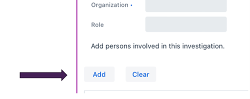
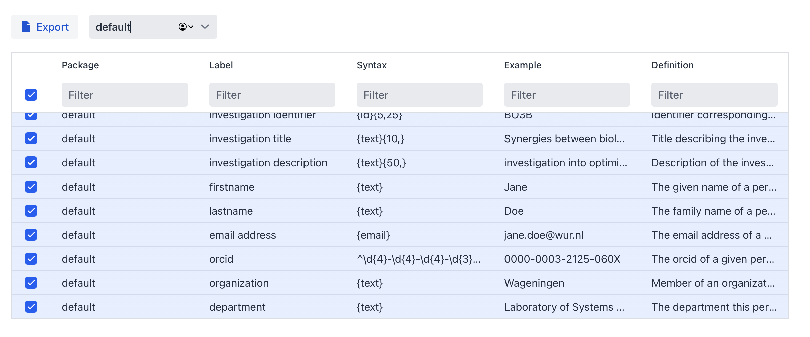
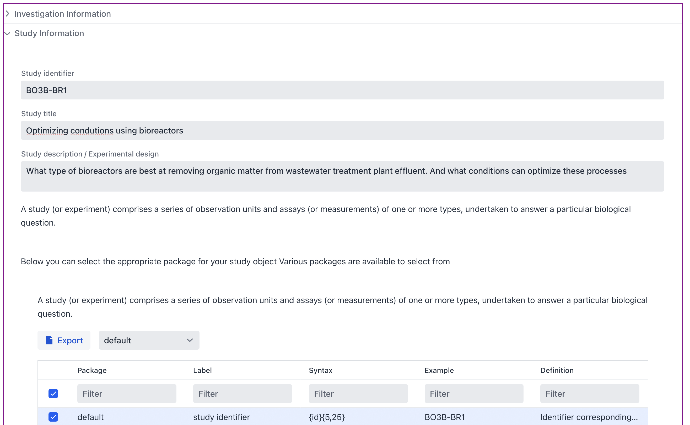
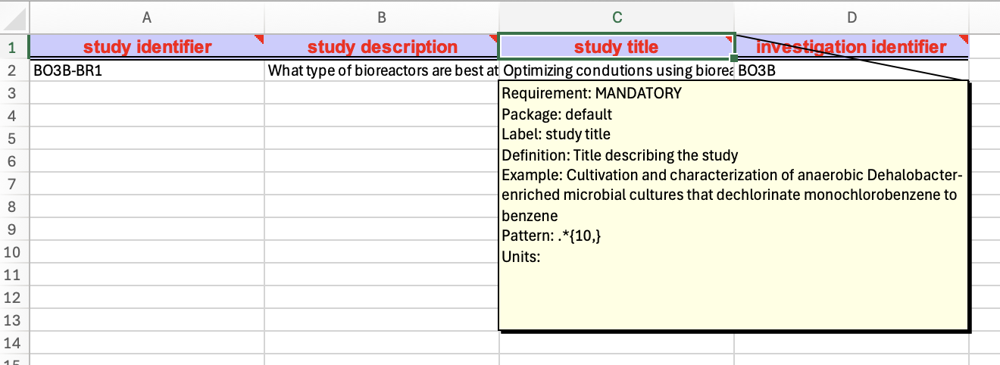
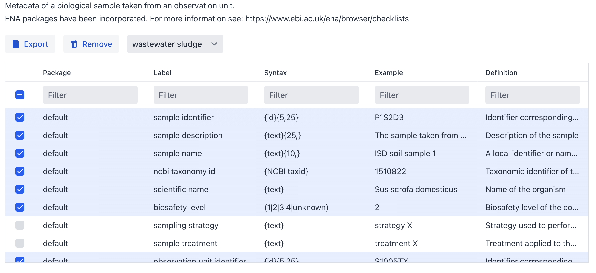
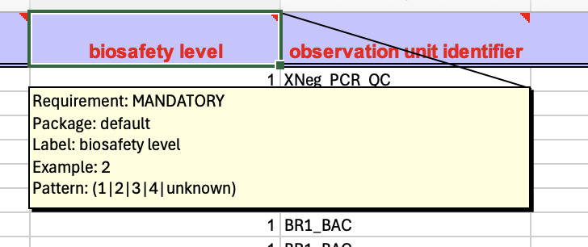
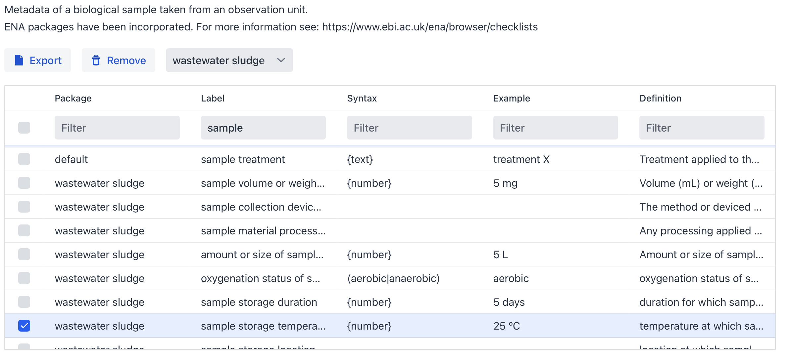
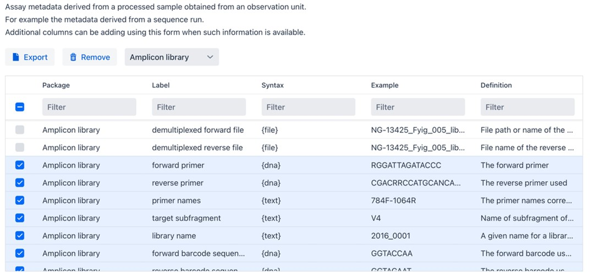

Metadata Configurator#
Introduction#
The ISA metadata framework standard specifies an abstract model to capture experimental metadata using three core levels, Investigation, Study and Assay.
The FAIR DS organises this metadata according to this standard. The ‘Investigation’ level provides the project context. A ‘Study’ is a unit of research and an ‘Assay’ an analytical measurement.
In this workshop we will follow the example of a study performed at Wageningen University of which has been published under Project number PRJEB54921.
So, let’s pretend we are about to start this Investigation. We define the aim of the study, the approach and specify the sample specific metadata. Using a simple four-step process the FAIR Data Station provides guidance on the management of the metadata. The steps are:
Selection of appropriate metadata standards resulting in spreadsheet template generation
Recording of metadata using the spreadsheet template
Validation of metadata content according to template requirements.
Data FAIRification through generation of a FAIR machine actionable metadata resource
Step 1. Provide context to the investigation#
Start up the FAIR DS tool available at https://fairds.fairbydesign.nl and click on Metadata Configurator
Step 1 |
Step 2 |
Step 3 |
|---|---|---|
Create an ISA metadata Excel template |
Recording of your metadata |
Validation of registered Field/Value pairs |
|
|
|


Investigation#
The Identifier, Title and the Description of this Investigation would be something like: (you can copy/paste the various items in the Investigation textbox of the FAIR-DS tool).
Identifier: BO3B
Title: Synergies between biological and ozonisation processes for micropollutant removal
Description: Investigation into optimizing micropollutant removal from wastewater treatment plant effluent using biological treatment and ozonation
Note: Make sure that when you add (your) name and e-mail you push the add button.

Package selection (Investigation)#
At each level the metadata can vary depending on the packages selected. At the investigation level click on ‘Select a package’ and choose ‘default’.

Within a package not all terms have to be selected (by default only mandatory and recommended terms are selected). Terms from other packages are available to be selected in case you want to mix and match different packages together and re-use terms.
Once this is done you can go to the next section.
Study#
Now Unfold the Study textbox (At the bottom left of the Investigation textbox).
In our example there is one Study – but you can imagine that there will be a follow-up study at a later stage. Here we add the specifics of the particular study. In this case:
Identifier: BO3B-BR1
Title: Optimizing condutions using bioreactors
Description: What type of bioreactors are best at removing organic matter from wastewater treatment plant effluent. And what conditions can optimize these processes
Paste this text in the textbox, and we have already finished step 1 of 3!
Figure 2. Investigation/Study textbox with Investigation in collapsed state

Package selection (Study)#
As is done for the investigation a package needs to be selected for the study as well. Select default in the dropdown menu.
Export the workbook#
If you now push Generate workbook button it will export the Investigation and Study into an Excel notebook. As is mentioned, the Observation Unit, Sample and Assay can be integrated at a later stage. When you keep the window open we can move and integrate Step 2 directly.
Step 2: Using the spreadsheet templates#
Observation Unit#
Next, we need to define the Observation Units (in the official ISA ontology called: source-material) from which the samples (ISA: sample-material) will be taken. An observation unit can be a bioreactor, a plant, river, lake, animal, patients. As you can see it can be extremly diverse.
Let’s unfold Observation Unit Information, click the drop-down menu search a package and select the default package. If you click the Generate workbook button now it will export a new Excel file containting the Investigation, Study and Observation Unit.
Note
If you click the Export button inside the Observation Unit, the program will then export only the observation unit sheet of the complete workbook (Figure 3) which can be handy feature when we may want to amend our experimental design with more groups, but here we need to have the complete workbook first.
Figure 3: column headers represent interoperable Field names or attributes

Sample#
On the website we move on to sample level by unfolding Sample Information at the bottom left of the textbox.
The FAIR-DS currently has 40+ minimal information models (packages) to choose from and the most appropriate is in this case the “wastewater sludge” package. Mandatory Fields are selected by default, others can be selected to further enrich the metadata.
Figure 4: wastewater sludge package selection, Mandatory wastewater sludge fields are selected by default.

Let’s go back to the metadata per sample available from the original study. (ENA Accsesion: SAMEA110403919)
Bioreactor Metagenome Sample#
Field |
Value |
|---|---|
Scientific Name |
bioreactor metagenome |
Sample Accession |
SAMEA110403919 |
Center Name |
Wageningen University |
Sample Alias |
MBBR_10.03 |
Checklist |
ERC000011 |
Sample Title |
sample MBBR 10.03 |
Tax Id |
1076179 |
Collection Date |
2019-10-03 |
Country |
Netherlands |
Collection Temperature |
20 degrees Celsius |
Collection pH |
7 |
Sampling Strategy |
Using sterilized metal rod, sample from middle of the column, put in Eppendorf and immediately to -80 freezer |
Sample Size |
50 mL |
Observation Unit Title |
Moving bed bioreactor |
Observation Unit Name |
Moving bed bioreactor |
Observation Unit Identifier |
BR1_MBBR |
Observation Unit Description |
We have been running three types of bioreactors (BAC, SF and MBBR) at different feed flow speeds (0.25 - 4 L/h) for several months, while monitoring several parameters related to the effluent organic matter (TOC, UV254 absorbance and COD), oxygen and nutrient concentrations in the water |
Sample Type |
Effluent |
Solid/liquid |
Liquid |
Flow Rate (L/h) |
0.5 |
Sample Description |
MBBR effluent 0.5 Liter per Hour liquid |
Electron Acceptor Condition |
Aerobic |
Sample Process Key |
MBBR Liquid 0.5 |
Sample Condition |
Stored at -80 |
Local Storage Location |
-80 freezer at environmental technology. Moved to microbiology freezers in December 2019 |
Sample Treatment |
50 mL sample was filtered with a 0.2 μm filter, the filter was stored in an Eppendorf |
Material |
50 mL water |
Biosafety Level |
1 |
Other |
The reactors were fed with effluent wastewater treatment plant, with a short pre-aeration with pure oxygen to ensure aerobic conditions. No temperature or pH control |
Package Identifier |
UNLOCK_CORE |
Package Name |
Core |
Sample Identifier |
MBBR_10.03 |
Local Region Name |
ETE-WUR, Wageningen |
ENA-FIRST-PUBLIC |
2022-09-30T04:31:19Z |
ENA-LAST-UPDATE |
2022-09-30T04:31:19Z |
ENA-CHECKLIST |
ERC000011 |
The selected minimal information model contains field names and the restrictions on the linked values. These restrictions are also directly available in the resultant Excel workbook (Figure 5).
Figure 5: Metadata field info box 
To increase the interoperability of your metadata you have the option to either systematically review this list, which incidentally helps you identify crucial metadata you might not have considered and could enhance your design, or filter specifically for terms related to in this (Figure 6).
Figure 6: Overview of the sample metadata selection (Filter for wastewater sludge and select sample) 
Finally, the planned Assays#
From the publication we can learn that that 16s rDNA sequences were obtained from bioreactor wastewater experiments. On the website we move on to “Assay” information by unfolding Assay Information at the bottom left of the textbox and select “Amplicon demultiplexed”. Again, there are mandatory and optional fields for you to customize.
Figure 7: Assay metadata field info box. 
When you are done you can download the Excel workbook and start filling in your sample metadata.
Hint
You can download a template Excel workbook created by this tutorial available at: here.
Step 3: Metadata Validation#
In the next chapter, we will embark on an exploration of the validation tool.